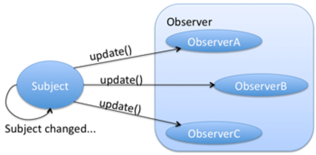

React
Compartilhando Estado Entre Componentes
Jefferson Mariano de Souza
Revisão rápida sobre React
O que é React?
Para que serve?
- Renderizar componentes
Como ele funciona?

Principais Conceitos
JSX
Propriedades
- Dados externos
- Imutáveis
Estado
- Dados armazenados pelo componente
- Pode ser mutável, gerenciado pelo componente
Exemplos de componentes


Estado compartilhado


- Partes da aplicação se comunicam
- Dado precisa ser sincronizado entre componentes
Como resolver este problema?
Como coordenar as ações para executarem em um fluxo?
MVC

- Problemas quando há muitos controllers e models
- Models e controllers comunicando uns com os outros (perde controle de quem alterou o que)
- Problemas com modificação de estado via requisição à API e usuário mudando tela
- Não há uma fonte única de dados da aplicação em determinadas situações
Flux
- Arquitetura
- Define um fluxo único de dados
Para que serve?
Gerenciar os dados da aplicação
- entrada de dados do usuario
- dados de uma api
- ações do usuário
Controlar como a aplicação deve se comportar com base na mudança destes dados
Quando devo usar?
- Compartilhar estado entre componentes
- Centralizar as regras de negócio da aplicação
- Agir com efeitos colaterais


Implementações de Flux
Exemplo de Implementação
- Adicionar items a uma lista
Sem Usar Libs
Vantagens
- Aprendizado
Desvantagens
- Código repetitivo
- Refazer algo que já existe
Exemplo
- Adicionar items a uma lista
Resumo
Redux
- Implementação mais popular de Flux
- Baseia-se no conceito de imutabilidade
- Criado por Dan Abramov
- Foi adotado pelo facebook como referência de flux
- Rendeu um emprego no core team do React ao criador

Redux - Características
- Single Store para toda a aplicação
- Estado global e imutável
- Não pode-se alterar dados na store diretamente
- Leitura feita com funções simples
- Inscrição em atualizações realizadas através de HOCs

Exemplo
- Adicionar items a uma lista
Resumo
Mobx
- biblioteca de gerenciamento de estado
- forma de trabalho parecida com orientação a objetos
- abstrai a complexidade de Dispatch e Notify das implementações flux
- permite múltiplas stores
- seu uso se baseia no pattern Observer
Observer Pattern
Exemplo
- Adicionar items a uma lista
Resumo
Conclusão
- Por que usar flux?
- Gerenciar informações da aplicação
- entrada de dados do usuário
- consumir dados de uma api
- ações do usuário
Conclusão
- Quando usar flux?
- compartilhar estado entre componentes
- centralizar as regras de negócio da aplicação
- informações transitam entre componentes
- agir com efeitos colaterais
THE END
Apresentação disponível em: http://studiojms.github.io/react-flux-presentation
Implementação exemplo: https://github.com/studiojms/react-flux
Implementação rodando: https://studiojms.github.io/react-flux/